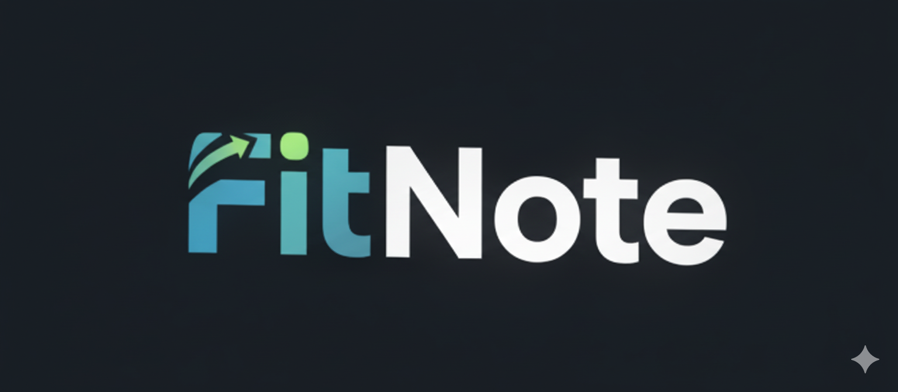

 - Functional Documentation
Project Overview
FitNote is a fitness tracking and management web application designed for gym goers and personal trainer. It provides a digital solution for tracking workouts and diet plans for both fitness mentors who train their clients and for the clients themselves who are taking metorship.
Need of the Project
-
Fitness mentors currently have to track all their clients’ workout schedules manually, either in notebooks or in note-taking apps.
-
Mentors have to send workout plans to clients through WhatsApp or other communication channels, which becomes messy and unorganized.
-
For client’s workout data, mentors often rely on video meetings or calls, which is time-consuming and inefficient.
-
Gym trainees also have to maintain their daily workouts manually in notebooks or random note-taking apps, which is not reliable.
-
When trainees want to review their previous workouts, they have to search through old notes or chats, and if they haven’t recorded them properly, they don’t have any accurate history of past workouts.
Objective
The main objective of the platform is to provide a single place where:
-
Fitness Mentor
- can assign workouts shedule's to clients.
- can monitor progress by reviewing past workout data and daily performance reports
-
Clients
- can can see the workouts assigned to them.
- can track all their past workout schedules and progress.